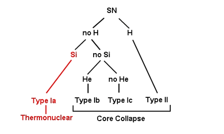

Supernovae are classified based on the presence or absence of certain features in their optical spectra taken near maximum light. They are broadly divided into 4 main Types, the naming convention of which only makes sense in historical context.
Supernovae were first categorised in 1941 when Rudolph Minkowski recognised that at least 2 different types existed, those that showed hydrogen (H) in their spectra: Type II, and those that did not: Type I. In the mid-1980s as the rate of supernova discoveries increased and data quality improved, Type I supernovae were further sub-divided based on the presence or absence of silicon (Si) and helium (He) in their spectra. Type Ia supernovae contain an obvious Si absorption at 6150 Angstoms, Type Ib have no Si but show He in emission, and Type Ic display neither Si nor He. It was also discovered that while Type Ia supernovae could be found anywhere and in any type of galaxy, Type Ib and Type Ic supernovae occurred primarily in populations of massive stars, similar to Type IIs.
We now know that Type II, Type Ib and Type Ic supernovae result from the core-collapse of massive stars, while Type Ia supernovae are the thermonuclear explosions of white dwarfs. Even so, and to the confusion of many, astronomers continue to use the nomenclature tied to the original Minkowski types to classify supernovae.